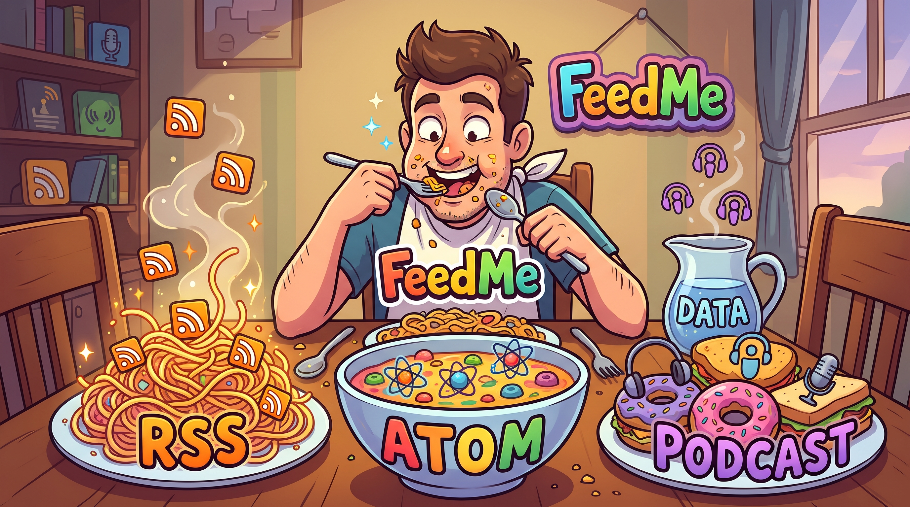

These projects are no longer being developed, but are still available for use. Some may be translated to Python in the future as part of this project.

Select a podcast on the Home tab to load its episodes.